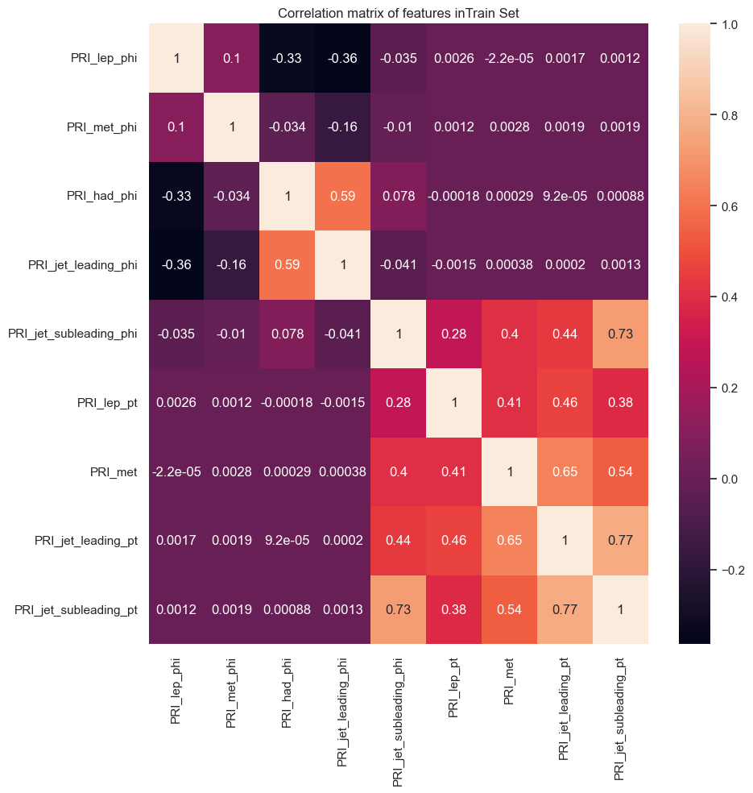

visualization module
- class visualization.Dataset_visualise(data_set, name='dataset', columns=None)
Bases:
objectA class for visualizing datasets.
- Parameters:
data_set (dict): The dataset containing the data, labels, weights, and detailed labels.
name (str): The name of the dataset (default: “dataset”).
columns (list): The list of column names to consider (default: None, which includes all columns).
- Attributes:
dfall (DataFrame): The dataset.
target (Series): The labels.
weights (Series): The weights.
detailed_label (ndarray): The detailed labels.
columns (list): The list of column names.
name (str): The name of the dataset.
keys (ndarray): The unique detailed labels.
weight_keys (dict): The weights for each detailed label.
- Methods:
examine_dataset(): Prints information about the dataset.
histogram_dataset(columns=None): Plots histograms of the dataset features.
correlation_plots(columns=None): Plots correlation matrices of the dataset features.
pair_plots(sample_size=10, columns=None): Plots pair plots of the dataset features.
stacked_histogram(field_name, mu_hat=1.0, bins=30): Plots a stacked histogram of a specific field in the dataset.
pair_plots_syst(df_syst, sample_size=10): Plots pair plots between the dataset and a system dataset.
- correlation_plots(columns=None)
Plots correlation matrices of the dataset features.
Args: * columns (list): The list of column names to consider (default: None, which includes all columns).

- examine_dataset()
Prints information about the dataset.
- histogram_dataset(columns=None)
Plots histograms of the dataset features.
- Args:
columns (list): The list of column names to consider (default: None, which includes all columns).
- pair_plots(sample_size=10, columns=None)
Plots pair plots of the dataset features.
- Args:
sample_size (int): The number of samples to consider (default: 10).
columns (list): The list of column names to consider (default: None, which includes all columns).
- pair_plots_syst(df_syst, sample_size=10)
Plots pair plots between the dataset and a system dataset.
- Args:
df_syst (DataFrame): The system dataset.
sample_size (int): The number of samples to consider (default: 10).
..images:: ../images/pair_plot_syst.png
- stacked_histogram(field_name, mu_hat=1.0, bins=30)
Plots a stacked histogram of a specific field in the dataset.
- Args:
field_name (str): The name of the field to plot.
mu_hat (float): The value of mu (default: 1.0).
bins (int): The number of bins for the histogram (default: 30).

- visualization.roc_curve_wrapper(score, labels, weights, plot_label='model', color='b', lw=2)
Plots the ROC curve.
- Args:
score (ndarray): The score.
labels (ndarray): The labels.
weights (ndarray): The weights.
plot_label (str, optional): The plot label. Defaults to “model”.
color (str, optional): The color. Defaults to “b”.
lw (int, optional): The line width. Defaults to 2.
- visualization.visualize_coverage(ingestion_result_dict, ground_truth_mus)
Plots a coverage plot of the mu values.
- Args:
ingestion_result_dict (dict): A dictionary containing the ingestion results.
ground_truth_mus (dict): A dictionary of ground truth mu values.

- visualization.visualize_scatter(ingestion_result_dict, ground_truth_mus)
Plots a scatter Plot of ground truth vs. predicted mu values.
- Args:
ingestion_result_dict (dict): A dictionary containing the ingestion results.
ground_truth_mus (dict): A dictionary of ground truth mu values.